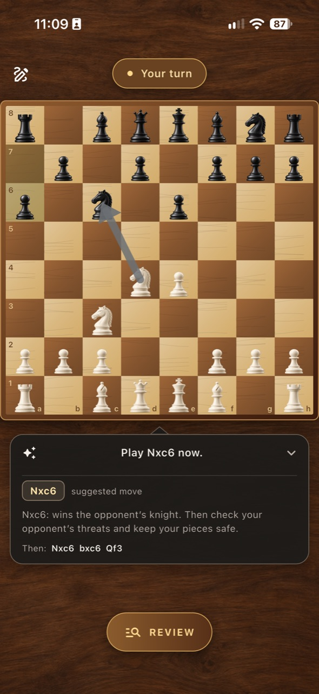
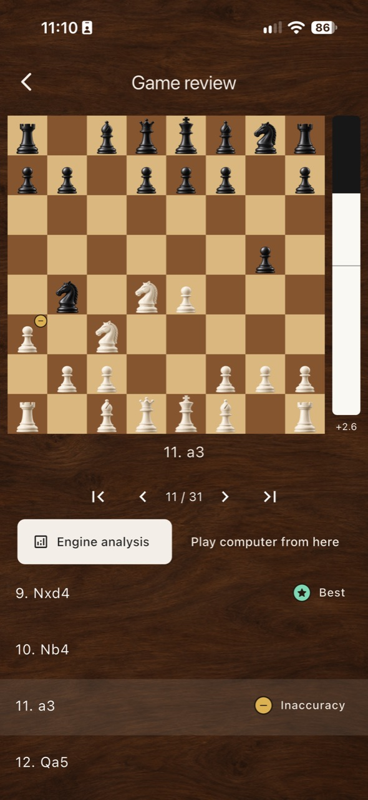
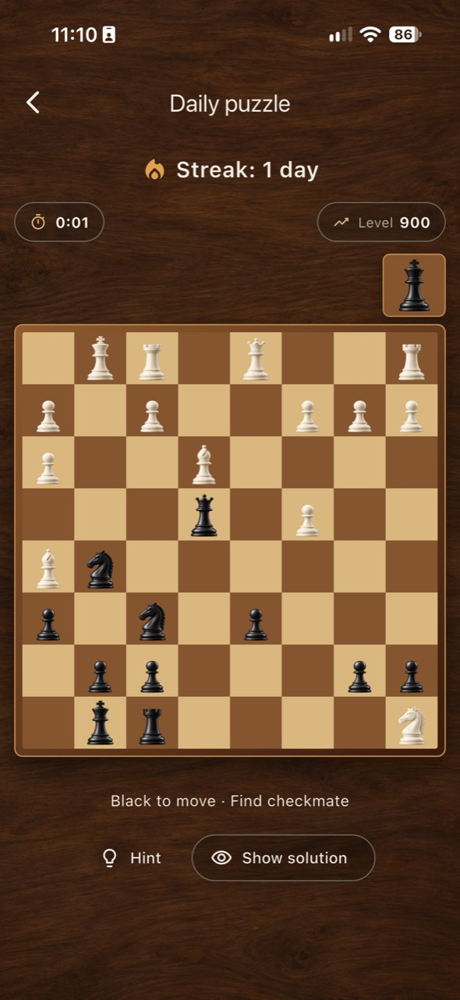
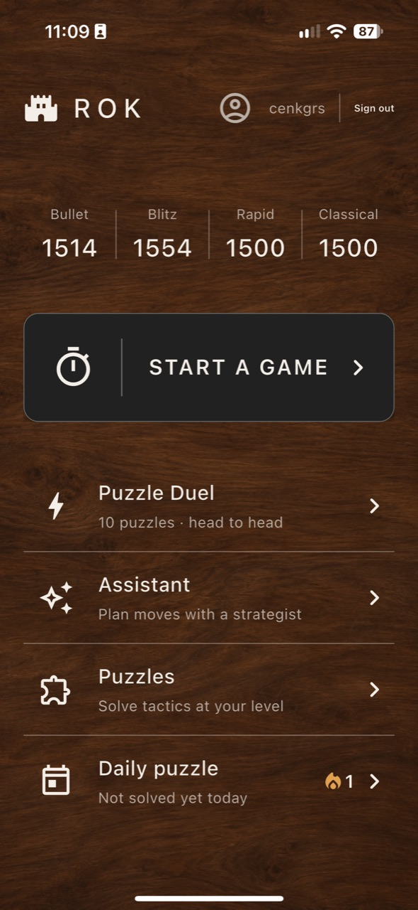
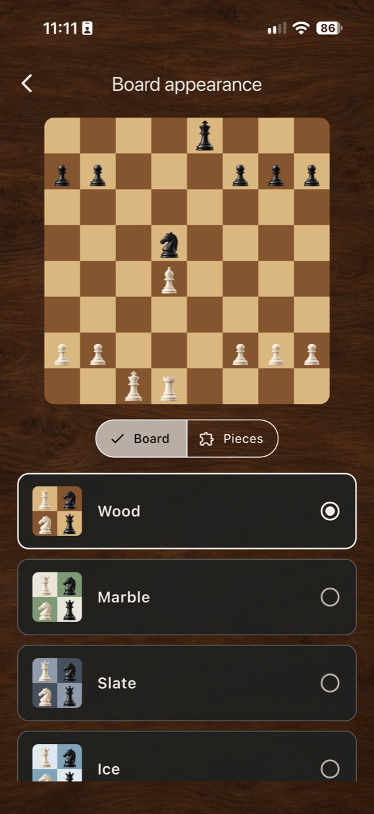

ROK / CHESS
Chess that tells
you why.
Most apps show you the best move. ROK names it, draws the arrow and says what it wins — then shows the line it expects to follow.

THE ASSISTANT
A coach that talks back
Ask in the middle of a game and ROK answers in a sentence: play Nxc6, it wins the opponent's knight, and here is the line that follows. The arrow lands on the board, so you see the idea before you play it.
Every explanation comes from a full-strength Stockfish search running on your phone — no account, no connection needed.

GAME REVIEW
Find the move that cost you
After the game, walk it move by move with the engine's verdict beside each one: best, good, inaccuracy, mistake, blunder. The evaluation bar shows the moment the game turned, and you can take over from any position and play it out against the computer.

PUZZLES AND DUELS
A reason to come back
One new puzzle every day, with a streak worth protecting and a level that follows your rating. In a puzzle duel you race a real opponent through the same ten puzzles and watch their board live — speed earns points, mistakes cost them.

ONLINE PLAY
Your clock runs on the server
Rated matches in bullet, blitz, rapid and classical. The clocks are kept server-side, so a dropped connection or a closed app does not lose your game — open ROK again and the match is where you left it. Invite a friend with a six-digit room code.

BOARDS AND PIECES
Nine boards, nine sets
Wood, marble, slate, ice, glass, porcelain, art deco and more. Board and pieces are chosen separately, so you can build the one you want to look at for an hour. All of them are free.
Free, and Premium
Free
$0
- Online play, puzzles and duels, unlimited
- Every board and piece set
- One assisted game a day
- One game review a day
ROK Premium
$2.99 / month
- Unlimited assisted games
- Unlimited game reviews
- No waiting for midnight
- $24.99 a year, if you stay
Prices are shown in US dollars here; the App Store charges in your own currency.
ROK / SATRANÇ
Nedenini söyleyen
satranç.
Çoğu uygulama en iyi hamleyi gösterir. ROK hamleyi adıyla söyler, oku çizer, ne kazandırdığını anlatır ve beklediği devamı gösterir.
ASİSTAN
Cevap veren bir antrenör
Oyunun ortasında sor, ROK tek cümleyle anlatsın: Nxc6 oyna, rakibin atını kazanıyor, devamı da şöyle. Ok tahtaya düşer; hamleyi yapmadan önce fikri görürsün.
Her açıklama telefonunda tam güçte çalışan Stockfish aramasından geliyor — hesap da gerekmiyor, bağlantı da.
MAÇ İNCELEMESİ
Maçı kaybettiren hamleyi bul
Maç bitince hamle hamle gez; her birinin yanında motorun değerlendirmesi var: en iyi, iyi, isabetsizlik, hata, vahim hata. Değerlendirme çubuğu maçın döndüğü anı gösterir, istediğin konumdan devralıp bilgisayara karşı oynayabilirsin.
BULMACA VE DÜELLO
Geri dönmek için bir sebep
Her gün yeni bir bulmaca, korumaya değer bir seri ve rating'ini takip eden bir seviye. Bulmaca düellosunda gerçek bir rakiple aynı on bulmacayı yarışır, onun tahtasını canlı izlersin — hız puan kazandırır, yanlışlar puanı azaltır.
ÇEVRİMİÇİ OYUN
Saatin sunucuda işler
Bullet, blitz, rapid ve klasik dereceli maçlar. Saatler sunucu tarafında tutuluyor; bağlantın kopsa da uygulamayı kapatsan da maçı kaybetmezsin — ROK'u yeniden aç, maç bıraktığın yerde durur. Arkadaşını altı haneli oda koduyla çağır.
TAHTALAR VE TAŞLAR
Dokuz tahta, dokuz set
Ahşap, mermer, arduvaz, buz, cam, porselen, art deco ve dahası. Tahta ile taşlar ayrı ayrı seçiliyor; bir saat boyunca bakmak isteyeceğin tahtayı kendin kuruyorsun. Hepsi ücretsiz.
Ücretsiz ve Premium
Ücretsiz
$0
- Çevrimiçi oyun, bulmacalar ve düellolar sınırsız
- Bütün tahta ve taş setleri
- Günde bir asistanlı maç
- Günde bir maç incelemesi
ROK Premium
$2.99 / ay
- Sınırsız asistanlı maç
- Sınırsız maç incelemesi
- Gece yarısını beklemek yok
- Kalırsan yılda $24.99
Fiyatlar burada ABD doları olarak yazıyor; App Store kendi para biriminden tahsil eder.